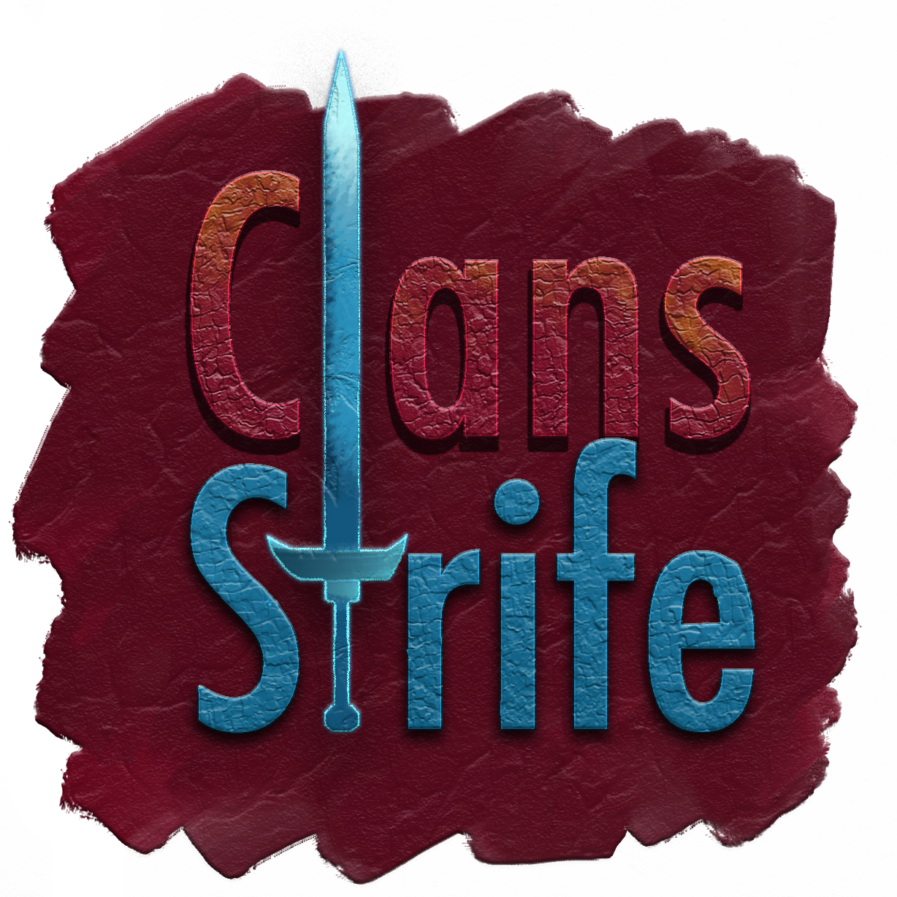

Clans - Strife
Начать играть
Магазин
Описание серверов
ClanWar
Информация
Голосование
Описание сервера ClanWar

В основном сервер построен на плагине Factions и экономике. Также на сервере присутствуют многие другие интересные моменты:
Моб арена;
Возможность вызова игрока на дуэль;
Во время путешествия по миру будут спавнится редкие мобы, с них падают вещи,опыт и деньги!;
На сервере включен самый сложный уровень мира, т.е мобы будут сильные и в целом выживать будет сложнее!;
Адекватный донат, который не дает особого преимущества в игре;
Возможность купить собственного mythic питомца который будет помогать вам в бою ( питомец не доступен за донат, только игровая валюта!).
Краткое описание плагина Factions:
Плагин Factions необходим для создания собственной фракции. Фракция предназначена для создания привата своих земель и объединения игроков.
Возможности плагина:
Захват нейтральной территории (вместо привычного привата территории топориком);
Захват вражеской территории (см. в "Руководство плагина");
Создание союзов между другими кланами и вражды между другими, для получения всеобщего господства на сервере!
Руководство по плагину Factions
Основные команды плагина Factions:
1) /f help,h,?[номер страницы] – Показать окно помощи.
2) /f show [имя фракции] – Посмотреть подробную информацию о выбранной фракции.
3) /f join [имя фракции] – Вступить в фракцию, после приглашения "/f invite"
4) /f leave – Покинуть вашу фракцию.
5) /f home – Телепортироватся в домашнюю точку вашей фракции.
6) /f create [имя фракции] – Создать свою фракцию.
7)/f desc [описание] – Изменить описании фракции.
8) /f tag [имя фракции] – Изменить название фракции.
9) /f invite,inv [имя игрока] – Пригласить игрока в фракцию.
10) /f sethome *[имя фракции] – Установить точку дома у вашей фракции.
11) /f claim – Присоединить территорию на которой вы находитесь к вашей фракции.
ДОП. Информация: Для того, чтобы захватить землю другого клана "/f claim" необходимо иметь силу клана. Сила клана накапливается благодаря количеству игроков в вашей фракции. Каждый игрок во фракции имеет свой показатель силы.Изначальное количество силы = 8, при смерти теряются 2.2 силы, и каждый час накапливается 2.2 силы. Для того чтобы захватить вражескую территорию или обычную, то вам нужно иметь по крайней мере 1 силу.
Т.е, если в вашем клане 16 силы (2 участника), то всего вы можете захватить 16 территорий, но при этом, если кто то из вашего клана умрет и сила вашего клана станет меньше количества захваченных земель (16-2), то другой клан сможет захватить две ваших территории, т.к сила упала на 2 единицы, поэтому, старайтесь как можно меньше умирать.
12) /f unclaim, declaim – Отсоеденить территорию из фракции на которой вы находитесь. Зона присоединения/отсоеденения территории в плагине это "чанк". Чанк территория 16х16 от коренной породы до неба. Если вы присоединяете территорию рядом с другой фракцией вы должны начать границу. Доступно только для Администраторов и Модераторов фракции.
13) /f kick [имя игрока] – Исключить игрока из фракции.
14) Модераторы фракции могут исключать обычных игроков, но не друг друга. Администрации фракции могут исключать модераторов фракции.
15) /f mod [имя игрока] – Установить или убрать права модератора выбранному члену фракции. Вы должны быть администратором данной фракции.
16) /f admin [имя игрока] – Передать права администратора другому члену фракции. Далее вы не будете администратором фракции. Вы будете сделаны модератором фракции, но новый администратор может в любое время вас исключить.
17) /f ally [имя фракции] – Союз.
18) /f neutral [имя фракции] – Нейтралитет.
19) /f enemy [имя фракции] – Вражда.
Правила ClanWar сервера
1. Запрещено построение стен, столбов или габаритных кратеров из песка и гравия.
Наказание: Блокировка аккаунта игрока, который занимался строительством данных сооружений, на 2 дня, а также удаление постройки.
2. Запрещено устанавливать точку дома (/sethome) на территории другой фракции без ее одобрения.
Наказание: Блокировка аккаунта на 2 дня.
3. Запрещена установка сундуков ниже 15 блоков от поверхности земли.
Наказание: Просьба перенести ресурсы. В случае отказа переноса ресурсов, блокировка главы фракции на 1 день, а также перенос ресурсов администратором сервера на допустимую высоту.
4. Запрещено строить рвы с водой и лавой для защиты своей фракции от взрыва TNT. Простые рвы без воды и лавы разрешены.
Наказание: Очистка воды и лавы модерацией сервера.
5. Запрещено заливать водой и лавой базы фракций, TNT пушки, фермы, а также разливать воду и лаву между стен для защиты фракции от взрыва.
Наказание: Блокировка аккаунта на 1 день.
6. Запрещено строить базу у воды, лавы или в воде или лаве. Обязательно должна присутствовать цельная опора или возведен остров.
Наказание: Очистка территории модерацией сервера.
7. Запрещено преднамеренно принимать игроков во фракцию и убивать с целью получения ресурсов.
Наказание: Блокировка аккаунта от 1 до 6 дней в зависимости от количества и ценности украденных ресурсов.
8. Запрещены названия фракций, состоящие из нецензурных слов и содержащие в себе унижение других игроков, фракций.
Наказание: Блокировка аккаунта аккаунта, установившего название фракции, на 3 дня.
9. Запрещено создание фракций с мультиаккаунтов и захват земель с целью избежать осады.
Наказание: Удаление препятствующей фракции, а также блокировка игроков, которые были созданы для поддержания силы во фракции. Территория фракции, созданная для поддержания силы, передается основной фракции, которая взаимодействовала с препятствующей фракцией.
10. Запрещена кража ресурсов у своих согильдийцев. Под этим понимается изъятие предметов из сундука, который подписан соответствующим ником.
Наказание: Блокировка аккаунта от 1 дня до блокировки по ПК в зависимости от количества и ценности украденных ресурсов.
11. Запрещены постройки в воздухе не по законам физики, которые не имеют видимой опоры.
Наказание: Удаление постройки. В случае отказа убрать постройку, выдается блокировка аккаунта главы фракции на 1 день, а также удаляется постройка администрацией сервера.
12. Запрещено строить столбы по вектору взрыва динамита, во время нападения.
Наказание: Блокировка аккаунта игрока, который занимался строительством данных сооружений, на 2 дня, а также удаление постройки.
13. Запрещено убивать/мешать персоналу уйти с места где происходила помощь игроку. Под этим понимается телепортация персонала к игроу для иной помощи.
Наказание: Блокировка аккаунта игрока на 1 день.
Закрыть ×
Группа Вконтакте
Проголосовать